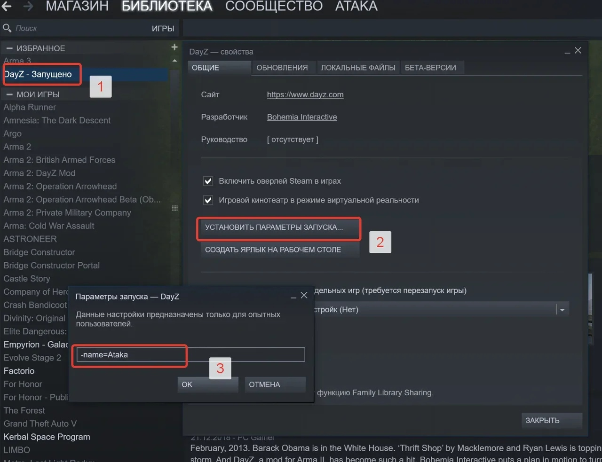
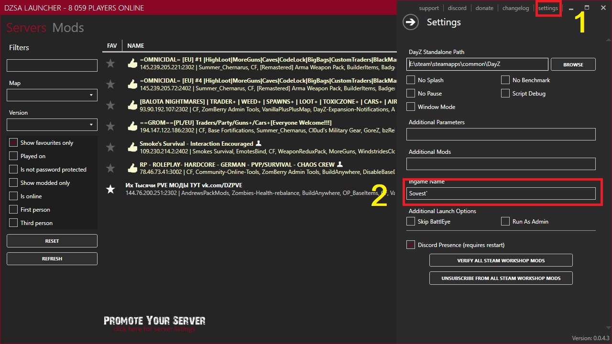
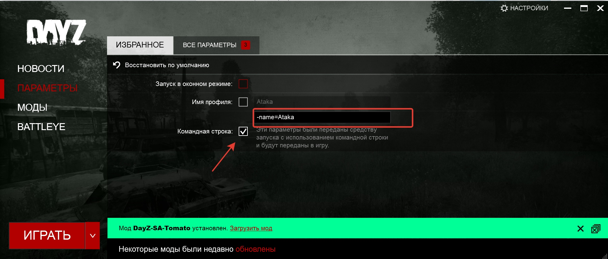
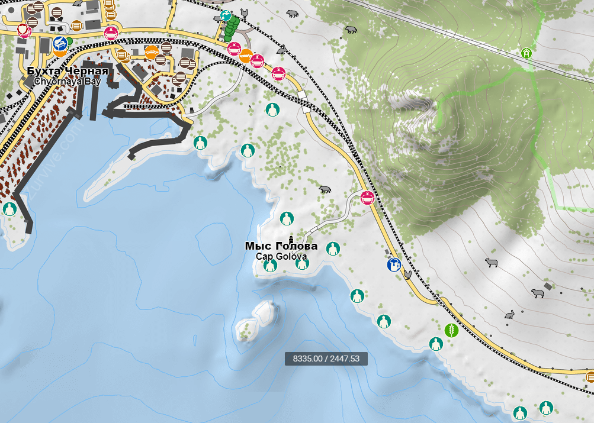

FAQ по серверу "Их тысячи"
Здесь собраны самы частые вопросы о разных аспектах игры на нашем сервере и ответы на них
Я не могу присоединиться к серверу! Пишет "Некорректная версия игры", что делать?
В первую очередь, проверить все ли моды у вас подключены. Также рекомендуем использовать DZSALauncher.
Почему именно этот лаунчер, а не ванильный? Да потому, что он большую часть работы выполнит за вас автоматически, а это в разы удобнее.
Рекомендуем также почитать нашу статью "Как подключиться к серверу 'Их тысячи' здесь и вопросы отпадут сами собой.
Я подключаюсь к серверу, но меня кикает, почему?
Возможно у вас не корректный ник или вы пытаетесь зайти с ником Survivor.
Вам нужно прописать свой ник в параметрах игры. Это можно сделать несколькими способами.
Первый способ: в Steam выбираем в библиотеке DayZ — нажимаем ПКМ — свойства — общие — установить параметры запуска — в появившемся окошке прописываем -name=ВАШ_НИК.
Где вместо ВАШ_НИК укажите ваш собственный ник. Например: -name=vasya

Второй способ: Скачиваем DZSALauncher, запускаем, в верхнем углу лаунчера находим вкладку settings в строке Ingame Name прописываем свой ник. Так же не забудьте после установки лаунчера указать путь к игре в первой строчке настроек.

Третий способ: В параметрах ванильного лаунчера DayZLauncher слева выбираем ПАРАМЕТРЫ - ВСЕ ПАРМЕТРЫ - ставим галочку в поле 'Командная строка' и в разблокированном поле пишем -name=ВАШ_НИК

У вас есть торговцы? Где они находятся?
Торговцы у нас есть. Они раскиданы по всей карте. Для того чтобы узнать где они находятся, необходимо отрыть карту (по стандарту M). У каждого торговца своя метка, загружанная с сервера.
Если торговец переезжает, Администрация переставляет соответствующую метку
Также у нас есть нелегальный торговец, который предлагает и интересуется некоторыми видами дорогих товаров. Местонахождение данного торговца периодически сообщается во внутриигровом чате
На мысе Голова есть еще один торговец, который продает некоторые виды напитков и снеков, а также медицины. Там же находится наша фан-зона, где проводятся совместные тусовки игроков.

Стоит отметить, что цены на сервере динамические, т.е. игроки сами регулируют как изменится цена товара. Чем больше тот или иной товар пользуется спросом у игроков, тем выше его цена. Чем больше того или иного товара приносят игроки торговцу на продажу, тем ниже цена.
Складские остатки у торговцев зависят в основном от вас, привоз товара из-за границ Черноруссии сильно ограничен. Поэтому внимательно следите за динамикой цен. С одинаковым успехом можно как поймать большой куш, так и прогореть.
Почему я падаю в обморок? У меня темнеет экран! Меня тошнит и я все время хочу пить! Что случилось?
На нашем сервере работает расширенные медицинские механики мода Medical Attention. Это значит, что у нас надо периодически отдыхать, вы можете заболеть, простудиться или напиться алкоголя.
Изучите материалы, изложенные в нашей статье FAQ по моду Medical Attention
Есть ли на сервере ночь и сколько она длится?
Ночь на сервере есть, продолжительность ночи составляет 1 час реального времени. Как правило, ночь начинается за час до очередного планового рестарта
Машины только покупать или можно найти? Есть ли машины из модов?
Можно купить, можно найти. Важно отметить, что цены на покупные машины и их запчасти все время меняются. Если вы решили собрать машину самостоятельно, то соблюдайте правила сервера, не задавайте простых вопросов.
Модовских машин у нас нет и в ближайшей перспективе не предвидится. Причин на то несколько. Во-первых, с модовскими машинами очень много проблем для Администрации, намного больше, чем с ванильными - они исчезают, застревают в текстурах и вообще ведут себя непредсказуемо. Во-вторых,
модовские машины, как правило, нарушают атмосферность DayZ, самобытность Черноруссии конца 80х-начала 90х.
Однако, у нас установлен мод CarTuning, который значительно снижает шум двигателя машин, а также некоторые звуки окружения (костры, бочки). Кроме того, данный мод добавляет в машины дополнительные специальные слоты под некоторый лут.
А что собственно с зомби и лутом?
Лут у нас сильно урезан, еды не много, но она есть. Не советуем все время бегать иначе вы быстро начнете терять энергию и воду и, в конце концов, умрете. Выносливость тоже имеет свои ограничения.
Зомби в основном динамические и их много, отсюда и название сервера "Их тысячи". Т.е. вы можете встретить их не только в населенных пунктах, но и в лесу и в поле. Есть новые типы зомбей, такие как охотники, ползающие, "танки" и другие. Мы постоянно работаем в этом направлении и что-то изменяем.
Поэтому следите за новостями в Discord
Решил заняться земледелием, сажаю семена в грядки, но ничего не растет!
У нас измененная механика роста. Растения растут медленно: от момента посадки, до сбора урожая проходит примерно 2 ч 30 минут, при условии что вы использовали удобрения. Если удобрений нет, то время роста увеличивается еще примерно на 30 минут.
Когда урожай созрел, у вас будет примерно 30 минут, чтобы его собрать, иначе урожай сгниет. Учитывая, что игровые сутки у нас 4 часа (после чего производится автоматический рестарт сервера), мы рекомендуем сажать культуры в начале дня, т.е. после рестарта.